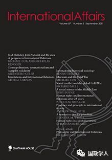

收录于合集

简 介
【作者】 玛格丽特·麦克米伦（Margaret MacMillan）：加拿大历史学家，历史研究与国际关系领域的领军人物，曾任剑桥大学三一学院院长，现任牛津大学教授，并在加拿大国际关系学院、加拿大大西洋委员会等机构任职。其代表作《缔造和平》斩获了达夫•库珀杰作奖、西塞尔提尔曼历史著作奖、塞缪尔•约翰逊非虚构类杰作奖等众多奖项。
【编译】 晋 玉
【校对】 黄运涛，邢戎
【审核】 丁伟航
【来源】
International Affairs , Volume 95, Issue 1, January 2019, Pages181–200, https://doi.org/10.1093/ia/iiy238
【期刊】 《国际事务》是国际关系领域的一流学术期刊，也是多学科综合性学术期刊。本刊于1992年由伦敦皇家国际事务研究所查塔姆学院(Chatham House)创立，内容来源广泛，力图囊括业内专家、学术新秀对重点、热点问题的最新思考。截至2017年，期刊影响因子为2.952，位居世界第8。

历史在国际社会中的应用：从巴黎和会到现在
The uses of history in international society: from the Paris peace conference to the present
Margaret MacMillan
内容提要
本文结合国际法和历史两个学科，研究自巴黎和会以来，国际社会对历史的运用问题。首先，作者强调“用历史推测未来”并不是历史在国际关系实践和研究中的唯一用途。而后，作者对比分析自巴黎和会以来历史作为国家独立、领土取得的主张基础和作为恢复原状（restitution）【注：恢复原状是国际责任法中，国际不法行为的责任形式】的主张理由的使用情况。作者发现从上世纪到本世纪，历史越来越多地被用作政权合法的证据（legitimate source of authority / source of legitimate authority），以此肯定了记录历史运用的价值。这也引发了作者的思考： 如果历史以此得以运用，那么这被运用的历史是怎样的历史？又有怎样的使用标准……（If history，then whose history，why and how？）作者虽然指出存在众多投机地、不诚信地滥用历史的现象，但表示自己仍相信绝大多数历史的真实性并提醒我们应当尽量客观地运用历史，客观地看待历史运用的两面性。
文章导读
在过去的两个世纪，人们一直试图总结历史规律以期揭秘未来。史学家修昔底德、马基雅弗利就持有此看法，此外世界上许多文化也都认同此看法。可以从历史中找到规律，该规律能为未来提供借鉴、参考已成为人们的常规思维。然而“历史的教训”（对历史用途的常规看法）远远不是历史在国际关系实践和研究中的唯一用途。
历史在关于国家承认的国际审议中有着更加决定性的作用。【译者认为此处作者要表达的是国际法中国家承认（构成说）的情况。国家承认(recognition of state)是指既存国家对新产生的国家给予的认可并接受由此而产生的法律后果，与新国家建立关系的行为。】所以文章将从更长的时间维度，更有针对性地对比探究100年前（一战结束时）和近期（冷战和后冷战时期）—— 1. 历史作为国家独立和领土取得的主张基础； 2.历史作为恢复原状的主张理由——历史的两种“新”用法的使用和发展情况。
**1
**
巴黎，1919
**
**
第一次世界大战后， 多数国家因德意志帝国、沙皇俄国、奥匈帝国等旧帝国的崩溃而得以独立，随之产生了大量领土和边界问题。国际社会就是反复向历史中寻求帮助和建议才解决了这些问题。在巴黎和会上，虽然历史也被用来支持非领土类的恢复原状主张（通过支持盟军要求德国赔偿的战争罪条款），但随着多数主权国家不再像从前一样把征服作为领土取得的合法方式， 历史更多地被用作国家承认、国家领土取得的理由。
**
**
**2
**
二十世纪后期
二十世纪后期，在欧洲殖民帝国逐渐解体，反殖民运动拉开序幕的背景下，关于国际社会成员扩张和改变的讨论依然以历史为论据。此时，历史与民族自决紧密联系， 被帝国剥削的历史、被帝国掠夺的命运成为第三世界国家紧密团结的基础，为第三世界争取国家独立、进行反殖民运动提供了道德和法律方面的武器。 作者认为，在赢得独立之后，第三世界国家还借助历史得到了其他好处，他们以“西方社会的富裕源于殖民所得的资本积累”为论调，再次赢得改革国际经济秩序的机会（尽管新的国际经济秩序仍未得以建立）。此外，与巴黎和会时相比，尽管历史仍被用来作为领土扩张的理由，但由于此时去殖民化不是要求重建国际边界，而是要求在欧洲殖民者已经划定的领土边界内 实现多方位的、真正的民族自决，所以此时历史的这种特殊用法的影响力有所降低。
**3
**
结 论
通过以上研究作者得出结论： 除把历史作为经验外，历史还有其他用法。不论是在 1919年巴黎和会上，还是冷战结束以后， 历史都曾被国际社会用于主张国家独立、国家领土和恢复原状。只是由于国际环境变化，前种 用法较多地呈现于巴黎和会时期，而后者较多地出现于冷战时期。
基于历史的以上两种新用法，作者点明历史作为论据使用时不可能完全中立，但从外交角度看，借助历史“论证”国家有争议行动的正当性确实行之有效，所以强调记载历史运用一事本身的价值性。此外，作者也引导学者们思考历史的这两种“新”用法所引发的一系列历史、哲学及规范性问题，即如果历史被如此运用，那么如何处理历史与如国际法这样的其他已被认可的权威形式（accepted forms of authority）之间、过去与现在之间的关系，如何确定历史的可塑范围，又如何确立历史运用的标准？
最后，作者提出正是出于对现实事件的关切，我们才会去运用、解释历史；也正是出于这个原因，历史作为论据使用的准确性才会有待商榷。这并不是要论证历史作为论据使用必然是错误的，相反作者认为至今绝大多数历史都是真实的，（That much was true in 1919, and it remains true in 2019），要提醒我们尽量避免现实关切对历史事件解读的影响，同时也尽量客观看待历史运用的两面性。
_ ** _ 本文由国政学人微信平台独家编译首发**
更多阅读
【重磅速递】约瑟夫·奈：美国霸权的兴衰：从威尔逊到特朗普 | 国政学人
【重磅推荐】巴里·布赞：英国学派视角下的中国崛起 | 国政学人
【重磅速递】米尔斯海默：注定失败：自由主义国际秩序的兴衰 | 国政学人
【国际组织】IO杂志：联合国维和行动的武力运用问题研究 | 国政学人